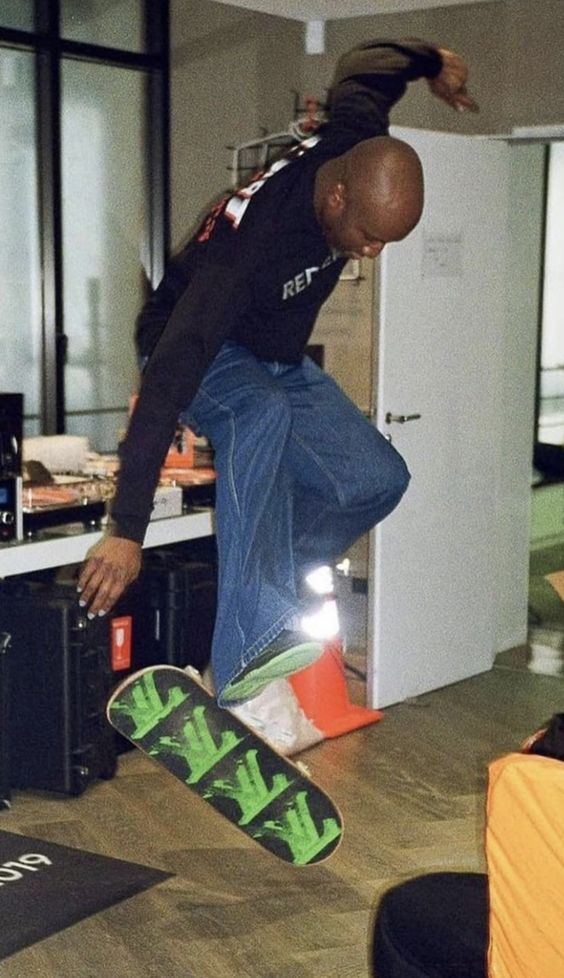

VIRGIL ABLOH.
Virgil Abloh nasceu no dia 30 de Setembro de 1980 em Rockford, uma pequena cidade pertinho de Chicago. Filho de pais imigrantes vindos de Gana, sua mãe era costureira e foi ela quem introduziu a ele os primeiros ensinamentos relacionados à moda. Virgil cresceu apaixonado por arte e esportes. A cultura de rua, em ebulição na década, chamou sua atenção e skate, grafite, basquete e futebol passaram a permear seus interesses. Fã de Michael Jordan, chegou a enviar protótipos de tênis para a Nike, mas suas cartas nunca foram respondidas. Rock'n'roll, hip-hop e os discos de soul do pai figuravam entre suas escolhas musicais e ainda na adolescência começou a tocar como DJ em festas de amigos. Apesar dos interesses diversos, na hora de escolher o curso superior, elegeu engenharia civil, graças a um antigo sonho paterno de ter um filho engenheiro. Após o diploma, ele concluiu um mestrado em arquitetura na renomada Illinois Institute of Technology. Quando questionado se aproveita os conhecimentos acadêmicos no métier atual, ele confirma que sim, já que na primeira você aprende como construir e criar uma base forte, e na segunda você pensa sobre estética e propósito, a mesma forma que ele lida com suas criações na moda. Seu pensamento completamente moderno é avesso à rótulos, e a verdade é que Abloh segue desempenhando diversos papéis, incluindo sua formação original, já tendo, por exemplo, projetado lojas da Off White.
